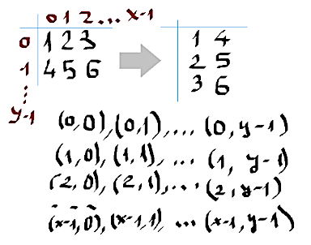
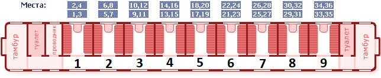
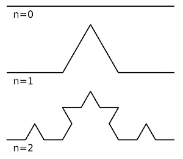
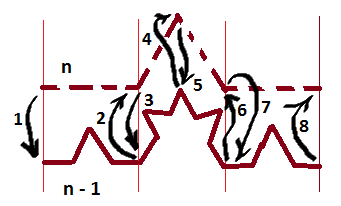
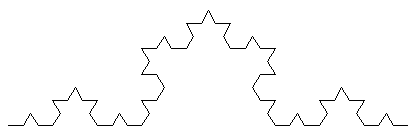
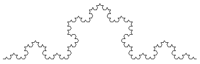
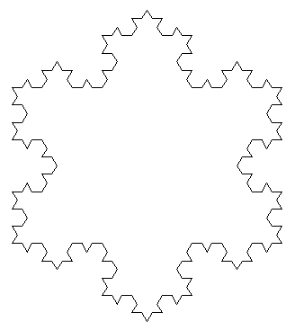
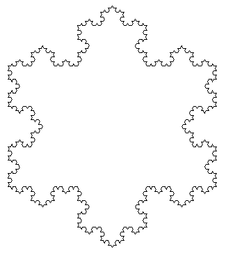
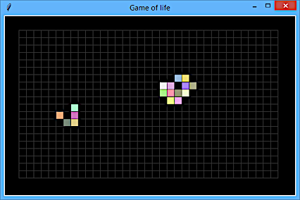

4 Python drill
4 Python drill
4 Python drill
В римской системе счисления для обозначения чисел используются следующие символы (справа записаны числа, которым они соответствуют в десятичной системе счисления):
Будем использовать вариант, в котором числа 4, 9, 40, 90, 400 и 900 записываются как вычитание из большего числа меньшего: IV, IX, XL, XC, CD и CM, соответственно.
Формат ввода: строка, содержащая натуральное число n, 0 < n < 4000.
Формат вывода: строка, содержащая число, закодированное в римской системе счисления.
d =[['', 'I','II','III','IV', 'V', 'VI','VII','VIII','IX'],
['', 'X','XX','XXX','XL','L','LX','LXX','LXXX','XC'],
['', 'C','CC','CCC','CD','D','DC','DCC','DCCC','CM'],
['', 'M','MM','MMM']]
def rome_number(n):
a = 0
result = []
while n > 0:
i = n % 10
n //= 10
result.append(d[a][i]) # Заполняем список
a += 1
result.reverse() # Переворачиваем список на месте
return ''.join(result) # Соединяем все элементы списка в строку
if __name__ == "__main__":
print(rome_number(int(input())))Выполнение:
>echo 3 | python rome_number.py
III
>echo 5 | python rome_number.py
V
>echo 1247 | python rome_number.py
MCCXLVIIДля этой функции был создан юни-тест, который проверил ее на ошибки.
import unittest
import rome_number as lib
class TestRomeNumber(unittest.TestCase):
def test_7(self):
self.assertEqual('VII', lib.rome_number(7))
def test_multiple(self):
for n, r in [(3, 'III'), (15, 'XV'), (1230, 'MCCXXX'), (78, 'LXXVIII'), (1, 'I'),
(412, 'CDXII'), (105, 'CV'), (1700, 'MDCC'), (3911, 'MMMCMXI')]:
with self.subTest(test_name=n):
self.assertEqual(r, lib.rome_number(n))
if __name__ == "__main__":
unittest.main()>python test_rome_number.py
..
----------------------------------------------------------------------
Ran 2 tests in 0.000s
OKЕсли тест находит ошибки, он подробно указывает где и что вызвало ошибку.
>python test_rome_number.py
..F.
======================================================================
FAIL: test_700 (__main__.TestRomeNumber)
----------------------------------------------------------------------
Traceback (most recent call last):
File "test_rome_number.py", line 14, in test_700
self.assertEqual('DCCI', lib.rome_number(700))
AssertionError: 'DCCI' != 'DCC'
- DCCI
? -
+ DCCИсходный код программы: rome_number.py.
Напишите программу, которая считывает целое число и выводит соответствующую ему римскую цифру. Если число находится вне диапазона 1-10, то программа должна вывести текст «ошибка».
d = ['', 'I','II','III','IV', 'V', 'VI','VII','VIII','IX', 'X']
x = int(input())
print(d[x] if 1 <= x <= 10 else 'ошибка')Программа считывает из консоли следующие строки:
После считывания строк программа выводит в консоль транспонированную матрицу, так же в виде строк, в которой элементы разделены пробелами.
Транспонирование можно представить, как перестроение матрицы путем смены расположения строк и столбцов.
Входные данные:
3 2
1 2 3
4 5 6 Выходные данные
1 4
2 5
3 6Декомпозиция. Оформим решение в виде трех функций:
Исходный код программы: transpond_matrix.py.

def input_matrix():
x, y = [int(i) for i in input().split()]
return [[i for i in input().split()]for _ in range(y)]
def transpond_matrix(m):
y = len(m)
x = len(m[0]) if y > 0 else 0
m1 = []
for i in range(x):
m1.append([m[j][i] for j in range(y)])
return m1
def print_matrix(m):
for line in m:
for cell in line:
print(str(cell).rjust(3, ' '), end=" ")
print()Исходный код программы: transpond_matrix_demo.py.
import transpond_matrix as lib
m = lib.input_matrix()
lib.print_matrix(m)
print('-------------------------')
m1 = lib.transpond_matrix(m)
lib.print_matrix(m1)Входные данные : transpond_matrix_input.txt.
4 3
1 2 3 4
5 6 7 8
9 10 11 12Выполнение:
>python transpond_matrix.py < transpond_matrix_input.txt
1 2 3 4
5 6 7 8
9 10 11 12
-------------------------
1 5 9
2 6 10
3 7 11
4 8 12Тестирование функции transpond_matrix.
Исходный код программы: transpond_matrix.py.
Напишите программу, которая проверяет, являются ли два введённых слова анаграммами. Регистр символов не должен влиять на ответ.
import unittest
def is_anagram(s1, s2):
return sorted(s1.lower()) == sorted(s2.lower())
class TestIsAnagram(unittest.TestCase):
def test_empty_strings(self):
self.assertTrue(is_anagram('', ''))
def test_positive(self):
self.assertTrue(is_anagram('кот', 'кто'))
def test_any_case(self):
self.assertTrue(is_anagram('AbaCa', 'AcaBa'))
def test_negative(self):
self.assertFalse(is_anagram('gbaba', 'acada'))
if __name__ == "__main__":
unittest.main()>python anagram.py
....
----------------------------------------------------------------------
Ran 4 tests in 0.001s
OKИсходный код программы: anagram.py.
На вход программе подаётся строка, содержащая слова, разделённые пробелом. Программа должна вывести статистику длин слов в полученной строке, от меньшей длины слова к большей (см. пример).
Словом считается последовательность произвольных символов, окружённая пробелами либо границами строки. Заметьте, что знаки препинания также относятся к слову.
Формат ввода: Одна строка, содержащая последовательности латинских символов и знаков препинания, разделённые пробелом.
Формат вывода: Для каждой длины слова, встречающейся в исходной строке, нужно указать количество слов с такой длиной длина: количество Статистика должна выводиться в порядке увеличения длины.
a = input().split()
d = {}
for w in a:
l = len(w)
d[l] = d.get(l, 0) + 1
for l, n in sorted(d.items()):
print(l, n, sep=':')Входные данные:
Beautiful is better than ugly. Explicit is better than implicit.2: 2
4: 2
5: 1
6: 2
8: 1
9: 2В римской системе счисления для обозначения чисел используются следующие символы (справа записаны числа, которым они соответствуют в десятичной системе счисления):
I = 1 V = 5 X = 10 L = 50 C = 100 D = 500 M = 1000 Будем использовать вариант, в котором числа 4, 9, 40, 90, 400 и 900 записываются как вычитание из большего числа меньшего: IV, IX, XL, XC, CD и CM, соответственно.
Напишите программу, которая переводит число из римской в десятичную систему счисления.
Формат ввода: Строка, содержащая число, закодированное в римской системе счисления. Гарантируется, что число меньше 4000.
Формат вывода: Строка, содержащая число в десятичной системе счисления, соответствующее введённому.
d = {'M':1000, 'D': 500, 'C': 100, 'L': 50, 'X': 10, 'V': 5, 'I': 1}
def rome_to_decimal(f):
n = 0
p = 0
for c in reversed(f):
v = d[c]
if v >= p:
n += v
else:
n -= v
p = v
return n
print(rome_to_decimal(input()))Входные данные:
MCMLXXXIV1984Исходный код программы: rome_to_decimal.py.
Дробное число в научном формате
Требуется написать программу, осуществляющую преобразование из одних единиц измерения длины в другие.
Должны поддерживаться
мили (1 mile = 1609 m), ярды (1 yard = 0.9144 m), футы (1 foot = 30.48 cm), дюймы (1 inch = 2.54 cm), километры (1 km = 1000 m), метры (m), сантиметры (1 cm = 0.01 m) миллиметры (1 mm = 0.001 m) Используйте именно указанные в формулировке задачи единицы измерения с указанной точностью.
Формат ввода:
Одна строка с фразой следующего вида:
Формат вывода: Дробное число в научном формате (экспоненциальном), с точностью ровно два знака после запятой.
d = {'mile': 1609, 'yard': 0.9144, 'foot': 0.3048, 'inch': 0.0254, 'km': 1000,
'm': 1, 'cm': 0.01, 'mm': 0.001}
x, f, _, t = input().split()
print("{:.2e}".format(float(x) * d[f] / d[t]))Входные данные:
15.5 mile in km2.49e+01Другой пример:
Напишите программу, которая вычисляет долю студентов, получивших оценку A. Используется пятибалльная система оценивания с оценками A, B, C, D, F.
Строка, в которой через пробел записаны оценки студентов. Оценок всегда не меньше одной.
Формат вывода: Дробное число с ровно двумя знаками после запятой.
b = input().split()
cnt = 0
for n in b:
if n == 'A':
cnt += 1
r = cnt / len(b)
print("{:.2f}".format(float(r)))Более короткий вариант решения:
sp = input().split()
print('{:.2f}'.format(sp.count('A') / len(sp)))В данном решении используется Counter— это dict подкласс для подсчета объектов. Это коллекция,
в которой элементы хранятся как ключи словаря, а их счетчики хранятся как значения словаря.
Подсчеты могут быть любыми целыми значениями, включая нулевые или отрицательные подсчеты.
Класс Counter подобен мультимножествам в других языках.
!--p ["номер купе"]-->
В купейном вагоне имеется 99 купе с четырьмя местами для пассажиров в каждом. Напишите программу, которая определяет номер купе, в котором находится место с заданным номером (нумерация мест сквозная, начинается с 1).
На вход программе подаётся целое число – место с заданным номером в вагоне.
Программа должна вывести одно число – номер купе, в котором находится указанное место.

print((int(input())-1) // 4 + 1)Входные данные:
21Также см. Википедию.
Есть 1 стержень с дисками разного размера, и еще 2 пустых стержня. Надо переместить диски с одного стержня на другой. Перекладывать можно только по одному диску за ход. Складывать диски можно только меньший на больший. Требуется написать программу для перекладывания дисков.
def hanoi(n, s1, s2, s3):
if n < 1:
return
elif n < 2:
yield s1, s3
else:
yield from hanoi(n-1, s1, s3, s2) # разворачивает генератор как for и возвращает значение
yield s1, s3
yield from hanoi(n-1, s2, s1, s3)Подход к тестированию данного решения рассмотрен здесь. Ниже представлен готовый тестировочный код:
def test_hanoi(n, s1, s2, s3):
sticks = [[], [], []]
# Заполняем массив с индексом s1 числами от `n` до 1 и в убывающем порядке.
stick = sticks[s1]
for i in range(n, 0, -1):
stick.append(i)
# Выполняем перекладывания и проверки.
i = 0
for s_from, s_to in hanoi(n, s1, s2, s3):
# s_to = 2 # "вредоносный" код для проверки самого теста.
i = i + 1
disk = sticks[s_from].pop() # сняли диск с первого стержня.
stick_to = sticks[s_to] # стержень, на который перекладываем.
if len(stick_to) > 0: # массив stick_to не пустой.
over = stick_to[len(stick_to) - 1] # диск, на который перекладываем.
if disk >= over:
print(f"Eror: arguments n={n}, s1={s1}, s2={s2}, s3={s3}, step {i}, "
f"disk {disk} over {over}")
return
stick_to.append(disk) # добавление значения в массив (append)
# проверяем, что в массиве с индексом s3 находится `n` элементов.
if len(sticks[s3]) != n:
print(f"Eror: arguments n={n}, s1={s1}, s2={s2}, s3={s3}, final height "
f"is {len(sticks[s3])}")Исходный код программы: hanoi.py.
Напишите программу, которая определяет, являются ли три заданных числа (в указанном порядке) последовательными членами арифметической прогрессии.
На вход программе подаются три числа, каждое на отдельной строке.
Программа должна вывести «YES» или «NO» (без кавычек) в соответствии с условием задачи.
def is_range(sek):
if len(sek) < 3:
return 'NO'
delta = sek[1] - sek[0]
for i in range(2, len(sek)):
if sek[i]- sek[i - 1] != delta:
return 'NO'
return 'YES'
sek = int(input()),int(input()),int(input())
print(is_range(sek))Программа читает из файла текст и выводит наиболее часто встречающееся слово.
def repeating_word(input_file_name, output_file_name):
with open(input_file_name, 'r', encoding = 'UTF-8') as f:
with open(output_file_name, 'w', encoding = 'UTF-8') as o:
line = f.readline().lower()
while line:
line = line.split()
s = {}
i1=0
i2=''
q=0
t=[]
min1=0
for i in line: # ввожу слова в словарь
if i not in s: # проверяю есть ли слово в словаре,если есть,то добавляю1
s[i]=1
else:
s[i]+=1
for values in s.values(): # нахожу максимальное повторение
if values>i1:
i1=values
for keys , values in s.items():
if values==i1:
min1=keys
for keys , values in s.items(): # если слова встречаются одинаковое кол-во,
if values==i1: # то находим лексикографическое первое
if min1>keys:
min1=keys
print(min1,i1)
line=f.readline().lower()
f.close()
repeating_word('dataset_3363_3 (6).txt', 'reply_3363_2.txt')
print_file('reply_3363_2.txt') azt 3
cctyxtc 6
uczp 8
tyzu 2
z 6def word_count(file_name):
d = {}
with open(file_name, 'r', encoding = 'UTF-8') as f:
while True:
line = f.readline()
if line == '':
break
words = line.lower().split()
for w in words: # ввожу слова в словарь
if w not in d: # проверяю, есть ли слово в словаре, если нет, то добавляю
d[w] = 1
else: # если слово уже есть, то +1 к количеству
d[w] += 1
return d
def most_frequent_word(word_counts):
w_max = ''
n_max = 0
for w, n in word_counts.items():
if n > n_max or n == n_max and w < w_max:
n_max = n
w_max = w
return w_max, n_max
d = word_count('dataset_3363_3 (6).txt')
# d = word_count('word_count_text.txt')
print(d)
w, n = most_frequent_word(d)
print(w, n)
# with open('word_count.txt', 'w', encoding = 'UTF-8') as o:
# o.write(w + ' ' + str(n))Напишите функцию, которая для заданного натурального числа n генерирует последовательность чисел,
описанную в гипотезе Коллатца:
Если n четное, то делим его пополам, если нечётное, то умножаем на 3 и прибавляем 1. С итогом
вычисления снова проделываем эту операцию до тех пор, пока в результате не будет получено число 1.
Предполагается, что подобная последовательность остановится на числе 1 для любого начального натурального числа n > 0.
def colatc(n):
limit = 10000 # Гипотеза Коллатца - это гипотеза, поэтому мало ли что........
cunt = 0
while True:
yield n
cunt += 1
if cunt > limit:
raise Exception(f"Результат не достигнут за {limit} шагов")
if n == 1:
return
if n % 2 == 0:
n = n // 2
else:
n = 3 * n + 1
for n in colatc(int(input())):
print(n, end = ' ')>python hello.py
17
17 52 26 13 40 20 10 5 16 8 4 2 1Функция определяет длину последовательности чисел.
def colatc_len(n):
cunt = 0
for _ in colatc(n):
cunt += 1
return cunt
print(colatc_len(1001))>python hello.py
143Напишите программу, которая принимает на вход два целых числа: начало и конец отрезка (оба числа входят в отрезок).
Программа должна вывести числа из этого отрезка, но если число делится на 3, то вывести вместо него Fizz, если число делится на 5, вывести вместо него Buzz, а если делится и на три, и на 5, то вывести вместо этого числа FizzBuzz.
n, m = (int(i) for i in input().split())
for i in range(n, m + 1):
if i % 3 == 0 and i % 5 == 0:
print('FizzBuzz', end='\n ')
elif i % 3 == 0:
print('Fizz', end='\n')
elif i % 5 == 0:
print('Buzz', end='\n ')
else:
print(i, end='\n ')Формат ввода: два целых числа через пробел.
8 16Формат вывода: На отдельной строке каждое число из отрезка или слово, его заменяющее.
8
Fizz
Buzz
11
Fizz
13
14
FizzBuzz
16Note
Есть другая реализация этой задачи здесь.
Шифр Цезаря заключается в замене каждого символа входной строки на символ, находящийся на несколько позиций левее или правее его в алфавите.
Для всех символов сдвиг один и тот же. Сдвиг циклический, т.е. если к последнему символу алфавита применить единичный сдвиг, то он заменится на первый символ, и наоборот.
Напишите программу, которая шифрует текст шифром Цезаря.
Используемый алфавит -− пробел и малые символы латинского алфавита: ' abcdefghijklmnopqrstuvwxyz'
Формат ввода: На первой строке указывается используемый сдвиг шифрования: целое число. Положительное число соответствует сдвигу вправо. На второй строке указывается непустая фраза для шифрования. Ведущие и завершающие пробелы не учитывать.
Формат вывода: Единственная строка, в которой записана фраза: Result: "..." , где вместо многоточия внутри кавычек записана зашифрованная последовательность.
Алгоритм решения:
Для решения задачи требуется алфавит, зададим его в виде списка alf, в который эффективно искать
символ по индексу. Однако, поиск индекса по символу для списка неэффективен. Поэтому сгенерируем
словарь d на основе имеющегося списка.
alf = " abcdefghijklmnopqrstuvwxyz"
n = int(input())
s = input().strip()
l = len(alf)
d = {alf[i] : i for i in range(l)}
result = [alf[(d[c] + n) % l] for c in s]
print('Result:',' ','"',''.join(result),'"', sep='')# "lcdpcfdhvdu">python fils.py
3
i am caesar
Result: "lcdpcfdhvdu"Result: "lcdpcfdhvdu"
````shell
>python fils.py
-3
lcdpcfdhvdu
Result: "i am caesar"
Ломаная Коха — это простой геометрический фрактал.
Строится этот фрактал следующим образом: берётся отрезок, разделяется на три равных части. Вместо средней части вставляется два таких же отрезка, поставленные под углом 60 градусов друг к другу (см. иллюстрацию, переход от n=0 к n=1). Этот процесс повторяется на каждой итерации: каждый отрезок заменяется четырьмя.
Напишите программу, которая принимает на вход число n — количество итераций генерации кривой и выводит последовательность углов поворота при рисовании соответствующей линии от начальной точки к конечной, без отрыва пера.
Также см. Википедию:

Разработаем рекурсивный алгоритм решения задачи. Как мы можем видеть из рисунка, построение фрактала происходит одинаковым образом на каждом уровне популяции. Рассмотрим два соседних уровня.
1 — на уровне n происходит вызов уровня n - 1, который выполняет все необходимые повороты.
Уровень n - 1 при этом может рекурсивно вызывать более низкие уровни. Уровень 0 вызовов не
делает.
2 — уровень n - 1 отработал и вернул управление на уровень n. Уровень n делает поворота
на 60 градусов и снова вызывает уровень n - 1 (3), который делает то же самое, что и раньше и
возвращает управление на уровень n (4).
Дальнейшие действия аналогичны и понятны из рисунка. Реализация выглядит так:
def koch_fractal(n):
if n < 1:
return
yield from koch_fractal(n - 1)
yield pi / 3 # 60 градусов перевели в радианы
yield from koch_fractal(n - 1)
yield -pi * 2 / 3 # -120 градусов
yield from koch_fractal(n - 1)
yield pi / 3 # 60 градусов
yield from koch_fractal(n - 1)Для визуальной проверки алгоритма используем графическую библиотеку tkinter. Реализация отрисовки фрактала находится в файле koch_fractal.py. Были получены изображения:
 
Поле представляет собой прямоугольник, причём для крайних клеток поля соседними являются клетки с противоположного конца (поле представляет собой тор).
На первой строке указаны два целых числа через пробел -- высота и ширина поля. В следующих строках подаётся состояние поля. Точка "." обозначает мёртвую клетку, символ "X" − живую.
Следующее состояние поля, используя те же обозначения, что использовались на вводе.
def _how_many_alive(m, h, w, y, x):
top = y - 1
bottom = (y + 1) % h
left = x - 1
right = (x + 1) % w
return (m[top][left] + m[top][x] + m[top][right] + m[y][right] +
m[bottom][right] + m[bottom][left] + m[bottom][x] + m[y][left])
def life(m):
h = len(m)
w = len(m[0]) if h > 0 else 0
m1 = [[0] * w for _ in range(h)]
for y in range(h):
for x in range(w):
a = _how_many_alive(m, h, w, y, x) # Сколько живых вокруг
if a == 3 and m[y][x] == 0:
m1[y][x] = 1
elif 2 <= a <= 3:
m1[y][x] = m[y][x]
else:
m1[y][x] = 0
return m1
def input_matrix():
y, x = [int(i) for i in input().split()]
return [[1 if c == "X" else 0 for c in input().strip()] for _ in range(y)]
def print_matrix(m):
for line in m:
for cell in line:
print("X" if cell == 1 else ".", end="")
print()
if __name__ == "main":
m = input_matrix()
m = life(m)
print_matrix(m) Все решение разделим на три части:
Ключевым шагом является расчет матрицы следующего поколения. Следующее поколение формируется только на основе исходной матрицы, т.е. изменения сделанные в процессе формирования на результат не влияют. Например: если некая клетка перекрасилась из белого в черный, то при расчете следующей клетки эта клетка должна считаться белой, черной она будет считаться в следующем поколении. Проще всего реализовать данное правило если мы не будем менять исходную матрицу, а создадим новую и раскрасим все клетки заново.
5 6
...XX.
.XX...
..X...
XX....
X..XX..X..XX
.XX...
X.X...
XXXX.X
XXXXX.В файле life_anime.py находится
программа, которая выводит анимацию данного алгоритма.

Если видео не работает, то можно посмотреть на картинку.
На вход программе подается натуральное число n, затем n строк, затем число k — количество поисковых запросов, затем k строк — поисковые запросы. Напишите программу, которая выводит все введенные строки, в которых встречаются все поисковые запросы.
Программа должна вывести все введенные строки, в которых встречаются все поисковые запросы. Поиск не должен быть чувствителен к регистру символов.
lst = [input() for _ in range(int(input()))]
search = [input().lower() for _ in range(int(input()))]
for s in lst:
s_lower = s.lower()
for s1 in search:
if s1 not in s_lower:
break
else:
print(s)Искомые строки сразу приводим к нижнему регистру. Строки, в которых ищем, нельзя сразу переводить в нижний регистр, поскольку они должны выводиться в исходном виде. Перевод в нижний регистр выполняем непосредственно перед циклом поиска. В цикле проверяется вхождение искомого слова, если оно не найдено, то цикл завершается досрочно. Если цикл завершился без прерывания, то это значит, что все искомые слова были найдены, и строка печатается.
На вход программе подается строка текста, содержащая 4 целых числа разделенных точкой. Напишите программу, которая определяет является ли введенная строка текста корректным ip-адресом.
Формат выходных данных Программа должна вывести «ДА», если введенная строка является корректным ip-адресом, и «НЕТ» — в противном случае. IP-адрес является корректным, если все 4 числа находятся в диапазоне от 0 до 255 включительно.
print('ДА' if sum(1 for i in input().split('.') if 0 <= int(i) <= 255) == 4 else 'НЕТ')Здесь мы используем анонимный генератор
с фильтрацией. Функция sum() принимает этот генератор как
источник значений. Окончательное решение принимается с помощью условного (тернарного) оператора.
Напишите функцию, которая принимает в качестве аргумента строковое
значение пароля password и возвращает значение True если пароль является надежным и False в
противном случае.
Пароль является надежным если:
checks = [str.isupper, str.islower, str.isdigit]
def is_password_good(password):
if len(password) < 8:
return False
resalts = [False] * len(checks)
for c in password:
for i in range(len(checks)):
resalts[i] = resalts[i] or checks[i](c)
return sum(resalts) == len(checks)
# считываем данные
txt = input()
# вызываем функцию
print(is_password_good(txt))Представляем проверки отдельных символов как объекты-функции (также см. здесь). При этом код становится более читабельным и расширяемым.
Написать функцию слияния отсортированных списков в двух вариантах:
Первый вариант:
def merge(list1, list2):
tmp = []
i1 = 0
i2 = 0
while i1 < len(list1) and i2 < len(list2):
if list2[i2] < list1[i1]:
tmp.append(list2[i2])
i2 += 1
else:
tmp.append(list1[i1])
i1 += 1
for i in range(i1, len(list1)):
tmp.append(list1[i])
for i in range(i2, len(list2)):
tmp.append(list2[i])
return tmpВторой вариант (простая версия, использующая функцию merge):
def quick_merge(lists):
result = []
for l in lists:
result = merge(result, l)
return result
lists = [[1, 2, 3, 400], [50, 60, 700], [10, 11, 17]]
print(quick_merge(lists))>python program.py
[1, 2, 3, 10, 11, 17, 50, 60, 400, 700]Второй вариант, полное решение в одной функции:
def quick_merge(lists):
result = []
pointers = [0] * len(lists) # указатели текущих значений списков
i_min = 0 # индекс списка с выбранным минимальным значением
while i_min >= 0: # i_min также используется для завершения работы
v_min = None
i_min = -1
for i in range(len(lists)):
if pointers[i] < len(lists[i]): # рассматриваем только не закончившиеся списки
v = lists[i][pointers[i]] # текущее значение текущего списка
if v_min is None or v < v_min:
v_min = v
i_min = i
if i_min >= 0:
result.append(v_min)
pointers[i_min] += 1
return result
# считываем данные
lists = [[int(i) for i in input().split()] for _ in range(int(input()))]
# вызываем функцию
print(*quick_merge(lists))Напишите функцию, которая принимает в качестве аргумента строку text и возвращает значение True
если указанный текст является палиндромом и False в противном случае.
Палиндром – это строка, которая читается одинаково в обоих направлениях.
При проверке считайте большие и маленькие буквы одинаковыми, а также игнорируйте пробелы, а также
символы , . ! ? -.
import re
# объявление функции
def is_palindrome(text):
text = re.sub("[ .!?,-]", '', text).lower()
return text == text[::-1]
# считываем данные
txt = input()
# вызываем функцию
print(is_palindrome(txt))Напишите функцию, которая принимает в качестве аргумента непустую строку text, состоящую из
символов ( и ) и возвращает значение True если поступившая на вход строка является правильной
скобочной последовательностью и False в противном случае.
Правильной скобочной последовательностью называется строка, состоящая только из символов ( и ),
где каждой открывающей скобке найдется парная закрывающая скобка.
Note
Было решено расширить задачу, добавив проверку различных скобок и игнорирование других символов.
op = {'(': ')', '[': ']', '{': '}'}
cl = {v: k for k, v in op.items()}
# объявление функции
def is_correct_bracket(text):
s = []
for c in text:
if c in op:
s.append(c)
elif c in cl:
try:
if s.pop() != cl[c]:
return False
except IndexError:
return False
return len(s) == 0
# считываем данные
txt = input()
# вызываем функцию
print(is_correct_bracket(txt))Краткое описание алгоритма. Открывающиеся скобки просто добавляются в стек. При обнаружении закрывающейся скобки последняя добавленная скобка извлекается из стека и проверяется на соответствие с данной закрывающейся скобкой. Остальные символы игнорируются.
Поверхностное тестирование:
>echo ()[]{} | python program.py
True
>echo ()[]{]} | python program.py
False
>echo ()m,[]{} | python program.py
True
>echo ([{()()}]{}) | python program.py
True
>echo la la, la | python program.py
TrueНапишите функцию, которая принимает в качестве аргумента строку в «верблюжьем регистре» и преобразует его в «змеиный регистр».
# объявление функции
def convert_to_python_case(text):
result = [[]]
current = result[0]
for c in text:
if c.isupper():
current = []
result.append(current)
current.append(c)
return '_'.join([''.join(e).lower() for e in result if len(e) > 0])
# считываем данные
txt = input()
# вызываем функцию
print(convert_to_python_case(txt))Поверхностное тестирование:
>echo ThisIsCamelCased | python program.py
this_is_camel_cased
>echo thisIsCamelCased87 | python program.py
this_is_camel_cased87Имеется реализованная функция f(x), принимающая на вход целое число x, которая вычисляет
некоторое целочисленное значение и возвращает его в качестве результата работы. Функция вычисляется
достаточно долго, ничего не выводит на экран, не пишет в файлы и зависит только от переданного
аргумента x.
Напишите программу, которая вычисляет значение этой функции для n чисел.
Формат ввода: на первой строке находится число n − количество значений, на которых нужно
посчитать функцию. После этого следует n строк, на каждой строке по одному целому числу.
Формат вывода:
n строк, в каждой из которой результат вычисления функции на соответствующем аргументе.
В случае дорогостоящих вычислений, если результат вычисления полностью определяется входными аргументами (т.е. при одних и тех же аргументах получается один и тот же результат), применяется так называемая практика кеширования (от англ. cache — запас), также см. в Википедии.
В нашем случае мы заведем буфер в котором будем хранить аргументы и вычисленные по ним результаты. При очередном вычислении мы сначала выполним поиск в буфере и только в случае неудачи вызовем дорогостоящую функцию и пополним буфер для последующих вычислений.
# Считайте, что функция f(x) уже определена выше. Определять её отдельно не требуется.
d = {}
for _ in range(int(input())):
x = int(input())
if x not in d:
d[x] = f(x)
print(d[x])